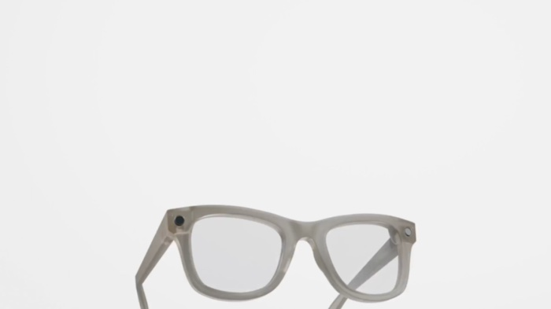
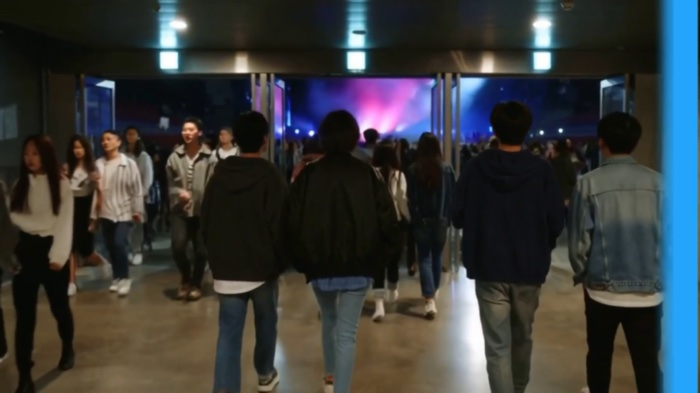
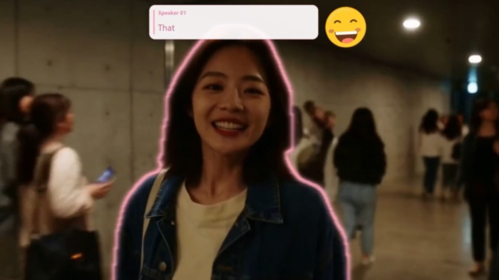

Problem: at a concert, the moment to join is over before you understand it
- The signal. A few people near you start to clap together. You do not hear it.
- The delay. You see hands moving. The crowd gives you context, a moment late.
- The cost. The room goes quiet. By the time you understand, the chance to join has passed.



Solution: HEIMA shows what is happening and when you can join
Glasses give three kinds of cue, each matched to what the wearer needs next. A phone app lets them set it up once.
- Timing. The crowd starts clapping: a border appears and an icon names the activity.
- Location. A chant starts to your left: the nearest edge of your view lights up.
- Meaning. The next talk moves to Room 2: the words of the announcement appear.
Research: captions give the words, not the moment
I led the secondary research with Vivian: papers on DHH access and sound awareness, caption glasses and apps (XRAI, GalaPro, LiveText), and AR research prototypes (HoloSound, SoundWeAR). Three pain points came out of it.
| Pain point | Evidence |
|---|---|
| P1. Missing the moment to join | Performers, fan chants and announcements overlap. Sources are hard to locate. A chant is often understood after the moment to join. |
| P2. Knowing, but not knowing how to respond | Captions carry words. Sing-alongs and call-and-response also need the action that goes with them. |
| P3. Cues must not add load | Eyes already switch between stage, interpreter and crowd. Captions use the same visual attention, and dim light makes it worse. |
Decisions: each cue answers one pain point
| Pain point | Decision | Why this form |
|---|---|---|
| P1 | Border for group activity. Lit edge for off-screen chants. Countdown for delayed starts. | Timing and direction are the urgent facts. A glance at the edge gives both. |
| P2 | Icons for announcements, chants and singing. Chant text written in advance, with the action. | A sing-along needs words and gesture. A room change needs the exact message. |
| P3 | Quiet by default. Limit on simultaneous cues. Display time set by importance. Icon shape, not color alone. Wearer picks text, icon or vibration. | If every sound made a cue, the glasses would become one more thing to look at. |
Trade-offs: we gave up spectacle and automation for reliability
| We chose | We gave up | Because |
|---|---|---|
| Make participation visible | Visualizing the concert as effects | More layers compete with the faces and performance people came to see. |
| Lightweight glasses | Phone or VR | Glasses keep the real venue in view and need no phone or mode switch. |
| Chant text written in advance | Detecting chants automatically | Sound-event detection recognized chants unreliably, so it stays a backup. Live transcription is kept for host announcements. |
| Zone guidance (which area, which direction) | Precise location | The wearer only needs to know where to turn. |
The app: one settings card, two speeds
The wearer sets up HEIMA once, then puts the phone away. Control must cost less attention than the cue it manages (P3).
- Tap the center of a card to turn captions, color or icons on or off.
- Tap anywhere else on the card to adjust size, position and width.
- Event priority. When an announcement and a chant collide, the wearer's ranking decides which one the glasses show first.
- Replay. After the show, a timeline marks announcements, chants and singing so the wearer can return to moments they half caught.
High-fidelity prototype: open in Figma
Proof: three AI models, one working prototype
For our Applied AI class, Vivian connected three models to Unity. The recording shows separate behaviors: speaker-linked captions, sound-event and direction cues, tone cues and an invitation-triggered countdown. I made the product video that shows the full intended experience.
| Model | Job | Cue it feeds |
|---|---|---|
| Paraformer | Speech to captions | Caption beside the speaker |
| YAMNet | Sound to event | Event icon and edge direction |
| emotion2vec | Voice to tone | Tone indicator in conversation |
The demo is not a field test. It shows these cues can be driven by real models, not only drawn.
Next steps: can the wearer join in time?
The pain points and cues come from research and scenario work. The project ended with a classroom demo. The next test asks one question: can a wearer who wants to join catch the moment?
- T0, the event: applause begins.
- T1, the cue: the border appears. T1 minus T0 is the delay before the prompt.
- T2, the response: the wearer joins. T2 minus T0 is the time to participation.
If a wearer chooses to watch, I would ask what they noticed. Joining is their choice, so the aim is to make joining possible, not to make it happen.
Reflection: what I learned
Choose the form by what the person needs next. Timing needed an edge and a glance. Meaning needed words. Once I asked what the wearer needs next, each cue chose its own form.
Every overlay asks someone to look away. Control and cues both cost attention, so the settings card had to be faster than the cue it manages.